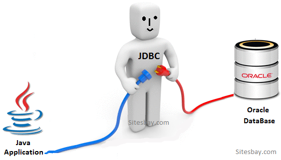
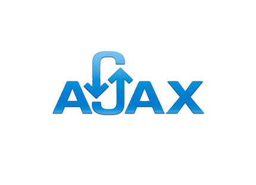
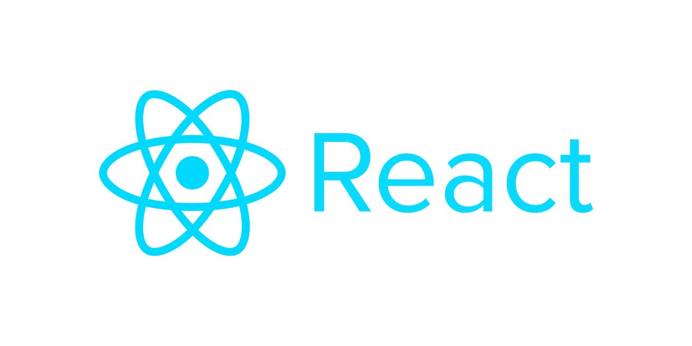

나의 개발자 로드맵
현재까지 배운 것
java, jdbc, oracle, html, css, js 등등- java & jdbc
- oracle
- html & css & js



앞으로 배울 것
JSP, Ajax, Spring Framework 등등- JSP
- Ajax
- Spring Framework

HTML내에 자바 코드를 삽입하여 웹 서버에서 동적으로 웹 페이지를 생성하여 웹 브라우저에 돌려주는 언어이다.

비동기적인 웹 애플리케이션의 제작을 위하여,
표현정보는 HTML과 CSS, 동적 출력은 DOM과 js, 웹서버와 교환을 위한 XML과 조합하는 기법이다.

동적인 웹 사이트를 개발하기 위한 여러 가지 서비스를 제공하고 있다.
과정이 끝나면?!
React, Vue, Kotlin - React
- Vue
- Kotlin

사용자 인터페이스를 구축하기 위한 js 라이브러리로, 단일 페이지 응용프로그램을 만드는데 유용하다.
인터페이스를 만들기 위한 자바스크립트 프레임워크이다.

코틀린은 JVM에서 동작하는 크로스 플랫폼 오픈소스 프로그래밍 언어로, 최근 안드로이드 앱 개발에서 선호하는 언어이다.